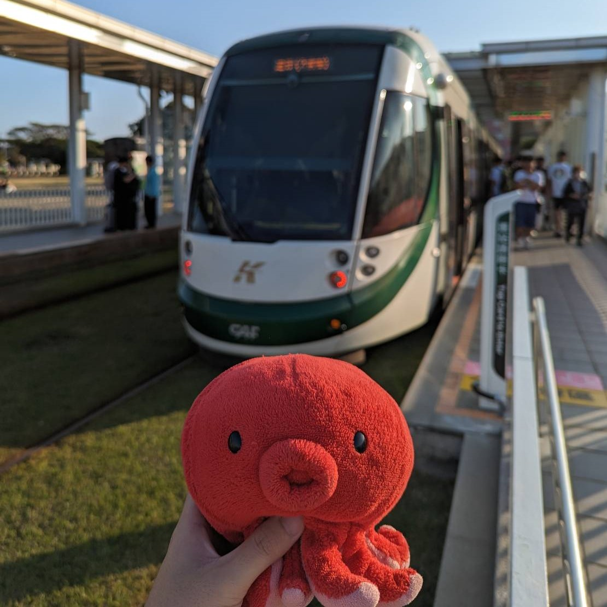

| 首頁 | 關於 | 著作發表 | 公共事務 | 學生自治 |  |
 |
 |
 |
陳亮均 TÂN, Liāng-kun |
陳亮均 TÂN Liāng-kun，目前為國立臺灣師範大學地理學系碩士生。
高雄市內惟人，生於高雄、長於高雄，雖然說「高雄」，但更喜歡「打狗」、「Táⁿ-káu」和「Takow」這幾個說法。
曾投入一些公共事務，現在雖仍有在關心，但已經在做個還算專心做研究的研究生了。
研究興趣：地名學、歷史地理學、語言地理學、學生自治史。
TÂN Liāng-kun, bo̍k-tsîng sī Kok-li̍p Tâi-uân Su-huān Tāi-ha̍k Tē-lí-ha̍k-hē ê si̍k-sū-sing.
Ko-hiông-tshī Lāi-uî lâng，tī Ko-hiông tshut-sì,tī Ko-hiông tuā-hàn,sui-jiân kóng "Ko-hiông", m̄-koh khah kah-ì Tánn-káu, Takow tsia-ê kóng-huat.
Bat tâu-ji̍p tsi̍t-kuá kong-kiōng sū-bū，tsit-má sui iáu-ū leh kuan-sim, m̄-koh í-king tsiânn-tsuè tsi̍t ê sǹg ū tsuan-sim tsò gián-kiú ê gián-kiú-sing ah.
Gián-kiú Hìng-tshù: Tē-miâ-ha̍k, Li̍k-sú Tē-lí-ha̍k, Gí-giân Tē-lí-ha̍k, Ha̍k-sing-tsū-tī-sú.
原先在五結鄉佔比極低的養殖漁戶戶數和人口數，至1970年代起略微上升，1980年代更大幅成長、逼近10%，可見養殖漁業在此時期的崛起。1980年代至1990年代，是五結鄉養殖漁業的全盛時期。至1990年代下半以後，養殖漁戶數逐漸下降。此一數據漲落，與前述季新村東側農田魚塭帶三個土地利用分期，相符程度甚高。
性暴力、性犯罪並不限於生理性別異性之間，即使是所謂單一性別宿舍，亦有可能發生類似事件。且更現實的是，設有多數系所的和平校區，其宿舍學一舍皆為雅房，若仍囿限在套房才能設置友善宿舍的想像，和平校區的需求將難以被回應，友善宿舍成效也當然會因地緣不便而不如預期。
我們或許可以透過以傳統地名為核心的更名、加註運動，單一個案式地個別討論每個捷運車站能如何更名、加註，而非再次由上而下、全面性地更名，塑造多元地名想像的同時也盡量避免重蹈覆轍。也或許，可以透過並列多族群、多語言的地名、站名，來保存不同族群、不同時代、不同歷史記憶的不同傳統、不同地名文化，避免陷入過度單一的去殖民想像。
2020年04月那次，校長被圍訪完，有一兩個知道我身分的記者上前問幾個問題，其他十幾個記者就跟著圍上來了，好恐怖。
| 2019年10月08日 | 2019年10月15日 | 2020年04月09日 | 2020年06月04日 |
這是章魚 a.k.a. 這個 html 的 favicon 原型，章魚有 Instagram 帳號「@takao_tako_」歡迎追蹤！
©陳亮均 TÂN, Liāng-kun
Email: TanLiangkun2000@gmail.com